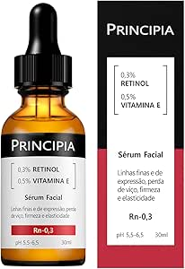

← Voltar para a Loja de Produtos
1. Sérum de Vitamina C
| produto |  |
|---|---|
| Preço | R$ 89,90 |
| O que é? | Sérum antioxidante concentrado que ilumina a pele e combate os radicais livres. |
| Benefícios | Clareia manchas, uniformiza o tom, estimula colágeno e deixa a pele mais luminosa. |
| Indicação | Pele opaca, manchas, primeiros sinais de envelhecimento e falta de viço. |
2. Sérum de Ácido Hialurônico
| produto | 
|
|---|---|
| Preço | R$ 79,90 |
| O que é? | Sérum hidratante de alta concentração que preenche e retém água na pele. |
| Benefícios | Hidratação profunda, efeito preenchimento, redução de linhas finas e pele mais macia. |
| Indicação | Pele desidratada, ressecada, com linhas de expressão ou falta de viço. |
3. Retinol / Retinaldeído
| produto |  |
|---|---|
| Preço | R$ 119,90 |
| O que é? | Derivado da vitamina A que acelera a renovação celular e combate o envelhecimento. |
| Benefícios | Reduz rugas, melhora textura, clareia manchas e estimula a produção de colágeno. |
| Indicação | Sinais de envelhecimento, rugas, textura irregular e manchas. |
4. Creme com Niacinamida
| produto |  |
|---|---|
| Preço | R$ 69,90 |
| O que é? | Creme com vitamina B3 que controla oleosidade e fortalece a barreira da pele. |
| Benefícios | Controla oleosidade, minimiza poros, uniformiza o tom e acalma a pele. |
| Indicação | Pele oleosa, poros dilatados, acne e manchas. |
5. Protetor Solar Facial FPS 50+
| produto | 
|
|---|---|
| Preço | R$ 59,90 |
| O que é? | Protetor solar facial de alta proteção, com ou sem cor. |
| Benefícios | Protege contra UVA/UVB, previne manchas e envelhecimento precoce. |
| Indicação | Uso diário em todos os tipos de pele. |
6. Creme Hidratante com Ceramidas
| produto |  |
|---|---|
| Preço | R$ 74,90 |
| O que é? | Creme reparador que restaura a barreira cutânea com ceramidas. |
| Benefícios | Hidratação intensa, restaura a barreira da pele e reduz ressecamento. |
| Indicação | Pele seca, sensível ou ressecada. |
7. Máscara de Argila ou Argila + Carvão
| produto | 
|
|---|---|
| Preço | R$ 49,90 |
| O que é? | Máscara purificante que limpa profundamente os poros. |
| Benefícios | Remove impurezas, controla oleosidade e deixa a pele mais limpa e mate. |
| Indicação | Pele oleosa, com poros dilatados ou tendência a cravos. |
8. Ácido Glicólico / AHA
| produto |  |
|---|---|
| Preço | R$ 84,90 |
| O que é? | Esfoliante químico que promove renovação celular. |
| Benefícios | Melhora textura, clareia manchas e deixa a pele mais uniforme. |
| Indicação | Pele opaca, com textura irregular ou manchas superficiais. |
9. Contorno dos Olhos
| produto |  |
|---|---|
| Preço | R$ 69,90 |
| O que é? | Creme específico para a área dos olhos com cafeína ou peptídeos. |
| Benefícios | Reduz olheiras, inchaço e linhas finas ao redor dos olhos. |
| Indicação | Olheiras, bolsas e linhas de expressão na região dos olhos. |
10. Creme com Peptídeos (Firmador)
| produto | .jpg) |
|---|---|
| Preço | R$ 99,90 |
| O que é? | Creme firmador com peptídeos que estimulam a produção de colágeno. |
| Benefícios | Aumenta a firmeza, melhora a elasticidade e reduz flacidez. |
| Indicação | Pele com perda de firmeza e primeiros sinais de flacidez. |
11. Óleo Facial de Rosa Mosqueta ou Squalane
| produto | 
|
|---|---|
| Preço | R$ 64,90 |
| O que é? | Óleo nutritivo que regenera e hidrata profundamente a pele. |
| Benefícios | Regeneração, hidratação, suavização de cicatrizes e melhora da elasticidade. |
| Indicação | Pele seca, madura ou com cicatrizes e manchas. |
12. Esfoliante Enzimático ou Físico Suave
| produto | 
|
|---|---|
| Preço | R$ 54,90 |
| O que é? | Esfoliante suave que remove células mortas sem agredir a pele. |
| Benefícios | Deixa a pele mais lisa, limpa e preparada para absorver os outros produtos. |
| Indicação | Todos os tipos de pele (usar 1 a 2 vezes por semana). |